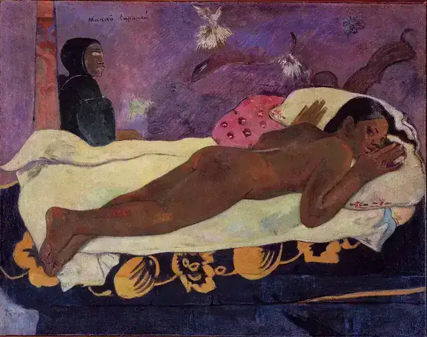
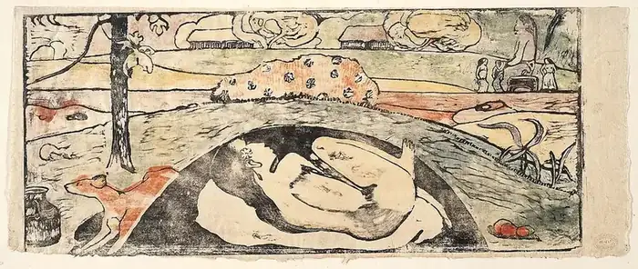
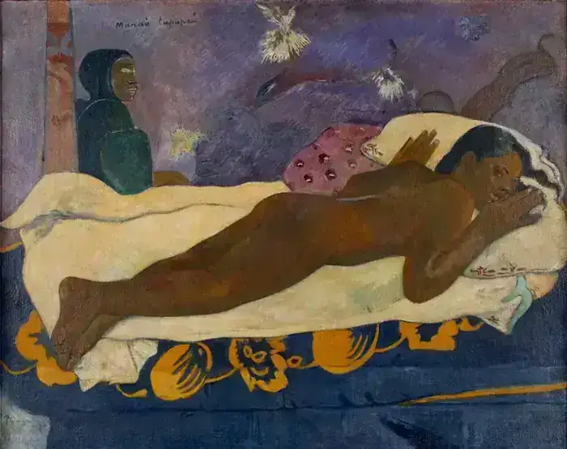

How it started
The rumour surfaced in 1969, in the middle of the band's final period. A student newspaper in the US printed a piece, radio stations picked it up, and by October it was an international story. The claim: McCartney had been killed in a car accident in November 1966, and the band had recruited a double — variously a lookalike, a contest winner, or a session musician — to keep the machine running.
Maps, diagrams and images





The Abbey Road cover, released in September 1969, was read as a funeral procession: the band walking across a zebra crossing, McCartney barefoot (corpses are buried without shoes), out of step with the others (he was the odd one out), holding a cigarette in his right hand (he was left-handed). The white Volkswagen Beetle in the background carried the number “28IF” — supposedly his age if he had lived.
There were further clues in the sleeve art, in backmasked voices (“turn me on, dead man” in “Revolution 9”), and in lyrics read as confessions.
He is alive, and has been continuously. McCartney was photographed, interviewed, and touring throughout the period in question; he married in 1969; he has had a documented public life for another half century. A substitution on that scale would require thousands of people to keep silent for decades.
The crash did not happen. There is no accident report, no death certificate, no funeral, no contemporaneous record of a car crash killing him. The story's starting event is fictional, which makes the clues decoration on nothing.
The clues are pattern-matching. Barefoot, out of step, a cigarette in the wrong hand, a licence plate — each has an ordinary explanation, and the reading is chosen after the fact. The plate “28IF” belonged to a real car and the number means nothing in particular; the “LMW 28IF” reading requires an arbitrary interpretation of stacked letters.
The Beatles defused it themselves. McCartney addressed it publicly at the time, and has repeatedly since, with the weariness of a man asked the same question for five decades.
Why it worked — and still does
Because it arrived at the perfect moment. The Beatles were the most photographed humans on Earth, their album art was dense with imagery, and the 1960s had trained a generation to look for hidden meanings in records. The rumour gave fans a game to play with objects they already loved.
It is also a genuinely well-constructed piece of folklore: it has a death (emotionally powerful), a conspiracy (flattering to the believer), and an endless supply of “evidence” (any image can be re-read). Nothing about it can be finished, because the clues regenerate.
The comparison worth making is with the Mandela Effect: both are cases of a collective reading hardening into a remembered fact. The difference is that “Paul is dead” was never really believed by most of the people who enjoyed it — it was a game, and the game is the point.
The one real casualty
Folklore of this kind occasionally attaches to real people, and there is a darker strand: the “Paul is dead” industry has spent decades scrutinising photographs of a living man for evidence he is not himself. It is worth remembering that the subject of a conspiracy theory is a person, and that being told you are a replacement for fifty years is a strange kind of harassment.
Sources for this page
- Wikipedia, “Paul is dead” — origin, clues, debunkingen.wikipedia.org
- BBC, “The bizarre story of the Paul is dead conspiracy”bbc.co.uk
- The Beatles, Abbey Road (1969) — the cover in questionthebeatles.com
- Snopes, “Paul McCartney died in 1966?”snopes.com
Open resources on this topic
- PapersOpen-access articles: DOAJ · PubMed Central · Internet Archive Scholar
- BooksPublic-domain and borrowable copies: Open Library · Project Gutenberg · Google Books · Internet Archive
Cite this page
Momin, S. (2026). Paul Is Dead. The Larger World Archive. https://drsamonline.github.io/LARGE_GLOBE/paul-is-dead.htmlMomin, Sohil. “Paul Is Dead.” The Larger World Archive, 2026, https://drsamonline.github.io/LARGE_GLOBE/paul-is-dead.html.Momin, Sohil. “Paul Is Dead.” The Larger World Archive, 2026. https://drsamonline.github.io/LARGE_GLOBE/paul-is-dead.html.@misc{paul2026paul,
author = {Momin, Sohil},
title = {Paul Is Dead},
year = {2026},
howpublished = {The Larger World Archive},
url = {https://drsamonline.github.io/LARGE_GLOBE/paul-is-dead.html},
note = {Last reviewed 20 November 2026}
}Last reviewed 20 November 2026 · Corrections policy · this page is not peer reviewed